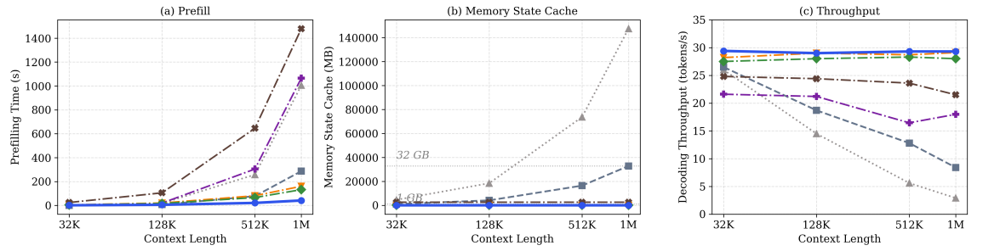

Write Once
Every historical segment is compressed only once into final-layer representations. Later turns never re-encode it.
A Scalable Memory Architecture for Large Language Models
An L-stage hybrid backbone interleaves three linear blocks (e.g., GDN) with one Memory Sparse Attention block.
History is encoded into one compact persistent bank as it arrives. Earlier segments are never encoded again.
Trailing 1/r (e.g., 64 tokens) final-layer states are stored once into the bank Gt, cutting persistent cache by L × r.
A learned 1024-d projection routes incoming queries to the top-K relevant states only once across all layers.
Active states are decoded into layer-specific KV caches for full-attention layers; the frozen backbone generates answers without forgetting.
Every historical segment is compressed only once into final-layer representations. Later turns never re-encode it.
A single top-K search per query routes all attention layers and decoding steps, eliminating repeated layer-wise lookup.
Active GPU cache remains strictly bounded at 25 MB up to 1M context — 1313× smaller than standard full-context KV caches.
The backbone stays frozen during generation while history is internalized as decoded KV caches, preserving 100% general reasoning.
Rigorous verification across pre-trained foundation models and native long-context memory adaptation.
Evaluating language modeling perplexity (PPL ↓) and zero-shot reasoning accuracy (Avg. ↑) across eight benchmarks at ~400M scale.
| Model Architecture | Params | Val PPL ↓ | WikiText ↓ | LAMB. ↓ | PIQA ↑ | ARC-e ↑ | SciQ ↑ | BoolQ ↑ | Avg. (8 Tasks) ↑ |
|---|---|---|---|---|---|---|---|---|---|
| Transformer (Vaswani et al., 2017) | 365M | 10.97 | 20.90 | 33.24 | 65.7 | 52.4 | 83.2 | 58.2 | 51.85 |
| Sliding Window Attn (SWA) | 365M | 11.00 | 20.52 | 32.69 | 65.6 | 50.1 | 83.2 | 59.7 | 51.60 |
| Gated DeltaNet (GDN) (Yang et al., 2025) | 410M | 11.11 | 26.03 | 33.37 | 67.6 | 54.1 | 84.2 | 60.6 | 52.31 |
| YOCO (Sun et al., 2024b) | 387M | 10.97 | 24.38 | 35.18 | 67.4 | 51.6 | 82.6 | 59.7 | 51.97 |
| MemOnce (r = 8, Ours) | 400M | 10.89 | 21.08 | 32.45 | 67.8 | 52.3 | 81.7 | 61.6 | 52.35 |
| MemOnce (r = 1, Ours) | 400M | 10.77 | 19.28 | 32.69 | 67.6 | 52.4 | 84.7 | 61.9 | 52.63 |
Evaluating response accuracy (%) across 5 memory benchmarks. MemOnce is the first native memory model to surpass full-context baselines.
| Model | Scale | MemBench (~4K) | LoCoMo (~21K) | LongMemEval (~115K) | PersonaMem (~128K) | PersonaMem (~1M) | Overall Avg. ↑ |
|---|---|---|---|---|---|---|---|
| Qwen3.5-4B (Full Context Baseline) | 4B | 82.64 | 69.55 | 42.20 | 43.50 | 33.60 | 54.30 |
| δ-Mem (Lei et al., 2026) | 4B | 46.72 | 16.88 | 11.20 | 40.00 | 31.60 | 29.28 |
| Metis (Zhang et al., 2026) | 4B | 47.45 | 9.35 | 7.40 | 37.60 | 37.20 | 27.80 |
| EvoEmbedding (Nie et al., 2026a) | 4B | 67.08 | 25.97 | 16.40 | 47.30 | 39.00 | 39.15 |
| M+ (Wang et al., 2025a) | 8B | 66.93 | 46.43 | 27.40 | 38.40 | 27.80 | 41.39 |
| MemOnce-2B (Ours) | 2B | 73.54 | 59.03 | 35.40 | 48.50 | 39.40 | 51.17 +1.84 |
| MemOnce-4B (Ours) | 4B | 84.34 | 67.01 | 47.40 | 53.60 | 48.00 | 60.07 +5.77 |
MemOnce scores 60.07% vs. 54.30% for full context on average, beating prior memory models by +18.68% (M+) and +32.27% (Metis). Query-aware sparse retrieval effectively mitigates attention dilution over long contexts.
Combining layer elimination and 8× temporal compression (L × r = 64×) incurs less than 0.3% downstream accuracy loss (52.63% → 52.35%), proving trailing states faithfully encapsulate segment semantics.
On MMLU/GSM8K/GPQA, MemOnce retains a 65.98% general reasoning average (vs 65.88% baseline), whereas full-model SFT drops to 38.40%, and soft-prompt/linear states drop by 18–23%.
Unlike pure linear models (GDN/Kimi-Linear) that suffer severe PPL degradation on WikiText (26.03+ vs 19.28) due to bounded state capacity, MemOnce preserves full attention recall via on-demand KV decoding.
MemOnce achieves linear prefilling time, constant active GPU memory, and near-invariant decoding throughput.

@article{nie2026memonce,
title = {MemOnce: A Scalable Memory Architecture for Large Language Models},
author = {Nie, Chang and Fu, Chaoyou and Liu, Songlin and Hu, Yiqing and Shan, Caifeng},
journal = {arXiv preprint},
year = {2026}
}